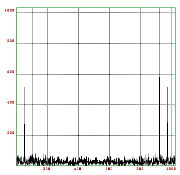

This file contains some explained input and output for some EULER sessions. Each one is dedicated to the solution of a specific problem. The following topics are available.
The following session has been left as it was (almost). It contains all the errors and corrections.
This is EULER, Version X.XX. Type help(Return) for help. Enter command) Loading utilities, Version X.XX.
This is the welcome message of EULER.
>sin(2)/2
0.4546487
We wish to study the function sin(t)/t in the neighborhood of 0. Thus we need some more digits
>longfromat
Variable longfromat not defined!
error in:
longfromat
^
>longformat
10.000000000000 5.000000000000
A typical typo. Simply press cursor up and correct it. Format was set to 10 digits width and 5 digits after decimal point. The new format gives 12 digits after decimal point. Other options are goodformat and expformat.
>sin(0.0001)/0.0001
0.999999998333
>sin(0.0001)/0.0001-1
-0.000000001667
We conclude that sin(t)/t converges to 1. Let us see a picture of that function, using a function table.
>t=-10:0.01:10;
>s=sin(t)/t;
>xplot(t,s);
>title("sin(t)/t");
t is a vector of 1000 values from -10 to 10. s is the function evaluated at these points. Remember that EULER evaluates all function on a vector element by element. The result is the following picture
By the way the above plot could have been generated with
>fplot("sin(x)/x",-10,10);
more easily. There are many functions in EULER allowing an expression or a function name as input.
Of course, we know that we can expand sin(t)/t to a power series around 0. Let us add a plot of the first 3 terms of this series. This shows, how a plot can be added to an existing one. It also shows that truncation of large values is done automatically, if the plot scale is already set.
>hold on; plot(t,1-t^2/fak(3)+t^4/fak(5)); hold off;
The result is the following picture
Many functions of EULER can use expressions as input. This makes it easy for the casual user to get results.
E.g., if we wanting to solve the equation cos(x)=x, we can use
>longformat;
>t=1; root("cos(t)-t",t)
0.7390851332152
In the case of the function root, the variable name may be arbitrary. There could also be other variables, which must be global variables. t is set to the computed value. The second parameter must be the name of the variable.
root is a special function for command line use. However, there are other methods to solve equations. The bisection methods needs two points, where the function has opposite sign.
>bisect("cos(x)-x",0,1)
0.7390851332157
This time the variable must be named x. We must provide the two points of opposite sign to bisect. Other methods are the faster secant method and the Newton method, which needs the derivative.
>secant("cos(x)-x",0,1)
0.7390851332152
>newton("cos(x)-x","-sin(x)-1",0)
0.7390851332152
In the case of the cos function, iterating the function converges to the fixed point.
>iterate("cos(x)",1)
0.7390851332143
>niterate("cos(x)",1,10)
0.5403023058681
0.8575532158464
0.6542897904978
0.7934803587426
0.7013687736228
0.7639596829007
0.7221024250267
0.7504177617638
0.7314040424225
0.7442373549006
We can view the history with niterate. The convergence is very slow.
We remark, that expressions can also be used for a quick draw of a function.
>fplot("x^3-x",-1,1);
>f3dplot("(x^3-x*y)/2");
Even a differential equation can be solved this way! Try
>x=linspace(0,2*pi,100); y=heun("sin(x)*y",x,1); xplot(x,y);
(Another implemented solver is the Runge-Kutta method, optionally with adaptive step size). Or an integration can be computed using
>romberg("exp(-x^2)/sqrt(pi)",-10,10)
1
1 is the exact value of this integral from -infinity to +infinity.
Another example is the minimum of a function, which can be computed with
>fmin("x^3-x",0,1)
0.57735
>x=1; root("3*x^2-1",x)
0.57735
We wish to visualize a complex function.
>phi=linspace(0,2*pi,500); >z=exp(1i*phi);
Thus z are points on the unit circle. In fact, we just went once around it. Let us see, if the point in z are indeed on the unit circle.
>max(abs(z)), min(abs(z)),
1.0000000
1.0000000
They are! Now let us see, how these points are mapped under the exp function.
>w=exp(z); >xplot(re(w),im(w));
This plot connects the points re(w[i]) and im(w[i]) by lines. By the way, we could have used xplot(w) simply for the same purpose. We see, that the plot is distorted. Thus we choose a more appropriate plot region.
>setplot(0,3,-1.5,1.5);
>xplot(re(w),im(w));
>title("exp(z) for |z|=1");
We compare the picture with the first three terms of the complex power series of exp(z).
>w1=1+z+z^2/2; >hold on; color(2); plot(re(w1),im(w1)); hold off;
Finally, we get the following picture
This visualizes, how a parametric plot of the mapped unit circle looks like.
To make a plot of the exp function near the unit circle, we need to define a grid of values. First of all, we establish the r and phi values
>r=(-1:0.1:1)'; phi=linspace(0,2*pi,60); >z=r+1i*phi; w=exp(z); >cplot(w); xplot();
We defined two matrices of x and y values of grid points (r,phi) and mapped them with exp. We made them visible with cplot. Note, that cplot does not add axis ticks. We had to do this ourselves.
We can now see, how exp distorts these values, using
>cplot(exp(w)); xplot();
We take the second order differential equation y''=2cos(x)-y. There is a numerical solver implemented in EULER, which uses the method of Heun.
>help heun
function heun (ffunction,t,y0)
## y=heun("f",t,y0,...) solves the differential equation y'=f(t,y).
## f(t,y,...) must be a function.
## y0 is the starting value.
To use it, we need to write a function, which implements f(t,y). It has two parameters, t and y. y can be a vector. In our case, we solve the equivalent equation y1'=2cos(x)-y2, y2'=y1.
>function f(t,y) $return [2*cos(t)-y[2],y[1]]; $endfunction
This function was simply entered interactively. Now lets compute a solution at discrete points t of the initial value problem y(0)=0, y'(0)=0.
>t=linspace(0,2*pi,100);
>s=heun("f",t,[0,0]);
>xplot(t,s);
>title("y''=2*cos(x)-y, plot of y,y'");
This is a plot of the solution and its first derivative. Since the exact solution is known, we can compute the maximal error.
>max(s[2]-t*sin(t))
0.00022
Next we try to solve the boundary value problem y(0)=0, y(1)=1. We use the shooting method. So we write a function, which computes y(1) in dependence of y'(0).
>function g(a)
$t=linspace(0,1,100);
$s=heun("f",t,[a,0]);
$return s[2,cols(s)];
$endfunction
Then
>g(0)
0.84147
>g(1)
1.68294
So y'(0) must be chosen between 0 and 1. We use an implemented root finder, the secant method. We seek the root of the following function.
>function h(a) $return g(a)-1 $endfunction
The secant method work like this.
>help secant
function secant (ffunction,a,b)
## secant("f",a,b,...) uses the secant method to find a root of f in [a,b]
So we find the solution with
>y1=secant("h",-1,0)
0.18840
Indeed
>g(y1)
1.00000
Lets have a look at this solution.
>t=linspace(0,2*pi,100);
>s=heun("f",t,[y1,0]);
>xplot(t,s[2]);
>title("y''=2*cos(x)-y, y[0]=0, y[1]=1");
We compute the Bezier polynomials first.
>t=0:0.01:1; >n=(0:5)';
>S=bin(5,n)*t^n*(1-t)^(5-n);
We need to explain this. By the rules for operands or functions with two parameters, S has as many rows as n, and as many columns as t. The expression is evaluated correctly using corresponding values.
>size(S)
6.0000000 101.0000000
>xplot(t,S);
>title("The Bezier polynomials");
Now we generate a Bezier polynomial to the points 1,3,4,4,3,1. The x-coordinates are simply equally spaced from 0 to 1.
This has been done with the following commands.
>v=[1,3,4,4,3,1]; xplot(linspace(0,1,5),v);
>hold on; color(2); plot(t,v.S); color(1); hold off;
>title("Bezier polynomial to a grid");
We can also get a surface. We use random z-coordinates and an equally spaced grid for x and y. However, the graph looks clearer, if we decrease the number of points in t a little bit. To redefine all of the above, we can simply recall the commands (or paste them).
>t=0:0.1:1;
>n=(0:5)';
>S=bin(5,n)*t^n*(1-t)^(5-n);
>Z=random(6,6);
>triangles(1); mesh(S'.Z.S);
>title("A Random Surface");
Another view, using central projection.

To view the surface from another view, we must define the x and y coordinates properly and call framedsolid with the scaling parameter of 1. I had to play with the view parameters to produce a nice look. triangles(1) makes 3D plots look better. This can be done with the following code.
>view(3,1.5,0.5,0.5);
>framedsolid(t',t,S'.Z.S,1);
>title("Another view");
What it the fastest way to compute sum z^n/n^2 for all |z|=1? This is a case for the Fast Fourier Transform (FFT). So
>a=1/(1:1024)^2;
>w=fft(a);
>xplot(w); title("sum z^n/n^2, |z|=1");
results in a plot of these values.
Also
>longformat; w[1]
1.643957981030+ 0.000000000000i
>pi^2/6
1.644934066848
w[1] is sum 1/n^2 and thus about equal to pi^2/6.
Lets take a simpler example.
>z=exp(2*1i*pi/8); z^8
1.00000+ -2.45030e-16i
z is the 8-th unit root. Now evaluate 1+x+2*x^2 for x=1,z,z^2,...,z^7 simultaneously.
>w=polyval([1,1,2,0,0,0,0,0],z^(0:7))
Column 1 to 2:
4.00000+ 0.00000i 1.70711+ 2.70711i
Column 3 to 4:
-1.00000+ 1.00000i 0.29289+ -1.29289i
Column 5 to 6:
2.00000+ -3.67545e-16i 0.29289+ 1.29289i
Column 7 to 8:
-1.00000+ -1.00000i 1.70711+ -2.70711i
>fft([1,1,2,0,0,0,0,0])
Column 1 to 2:
4.00000+ 0.00000i 1.70711+ 2.70711i
Column 3 to 4:
-1.00000+ 1.00000i 0.29289+ -1.29289i
Column 5 to 6:
2.00000+ 1.22515e-16i 0.29289+ 1.29289i
Column 7 to 8:
-1.00000+ -1.00000i 1.70711+ -2.70711i
This is exactly the same. FFT does the inverse. So ifft(w) yields [1,1,2,0,0,0,0,0].
What has this to do with trigonometric sums? Let us start with a trigonometric sum and evaluate it at equidistant points.
>d=2*pi/16; t=0:d:2*pi-d; s=1+sin(t)+2*cos(t)+3*sin(5*t);
>ifft(s)
Column 1 to 2:
1.00000+ 0.00000i 1.00000+ -0.50000i
Column 3 to 4:
-5.18102e-16+ -1.12612e-15i 2.52999e-16+ -8.88178e-16i
Column 5 to 6:
8.02039e-16+ -2.52673e-16i 6.52961e-17+ -1.50000i
Column 7 to 8:
8.07853e-16+ 4.28197e-16i 5.55112e-17+ 1.08247e-15i
Column 9 to 10:
-8.32667e-16+ -6.12574e-17i -1.11022e-16+ -9.99201e-16i
Column 11 to 12:
8.20540e-16+ -4.58826e-16i -8.29415e-16+ 1.50000i
Column 13 to 14:
8.63296e-16+ 1.91416e-16i 6.02979e-16+ 7.77156e-16i
Column 15 to 16:
-4.44158e-16+ 1.09549e-15i 1.00000+ 0.50000i
The relevant coefficients are clearly visible. Thus a[0] is 1, a[16]+a[1] is 2 and (a[16]-a[1])/i is 1, (a[12]-a[6])/i is 3. This is taking the real part of the polynomial.
FFT is usually used to make a frequency decomposition of a signal.
>t=linspace(0,2*pi,1023); size(t)
1.00000 1024.00000
>s=sin(50*t)+sin(100*t)*2;
>s=s+normal(size(s));
>xplot(s);
We have a signal composed of frequencies 50 and 100. To it, we added noise in the form of a normal distributed random variable. In the plot, the signal is almost invisible.
The signal looks like this.
This is really a noisy signal.
>xplot(abs(fft(s)));
However, the discrete fourier transform clearly shows the relevant frequencies.

We try to solve a 20x20 linear system, using the interval Gauss method, starting with an interval matrix A and an interval vector b, we solve A.x=b. I.e., we compute an inclusion of all possible solutions of A1.x=b1, where A1, b1 have all components in A, b respectively.
>A=~random(20,20)~; b=~normal(20,1)~; x=A\b,
~-8.82886,-8.31189~
~6.75804,6.86954~
~3.88369,4.21000~
~1.77887,1.93779~
~-1.10686,-1.06680~
~-1.63162,-1.49419~
~-12.37560,-12.36436~
~6.57582,6.58060~
~-3.99866,-3.98221~
~12.02685,12.03148~
~10.92949,10.93122~
~7.32614,7.32686~
~3.32568,3.32682~
~-5.00561,-5.00428~
~-0.58250,-0.58215~
~-7.73372,-7.73332~
~-3.28384,-3.28366~
~-0.49704,-0.49702~
~-2.53221,-2.53217~
~-3.84874,-3.84874~
>max(diameter(x)'),
0.51697
The computed vector x is an inclusion of the correct solution of A.x=b. However, we are not satisfied with this inclusion. To improve it, we use an approximate solution x. Then we compute the residuum r=A.x-b and solve A.y=r in an interval manner. We then set x=x-r. This yields an inclusion of the correct solution, which is at most 0.00002 wide.
>x=middle(A)\middle(b); x=x-A\residuum(A,x,b);
>max(diameter(x)'),
0.00002
>x[1],
~-8.57038,-8.57036~
To do this, it was not really necessary to compute the residuum exactly. We could have used x=x-A\(A.x-b). But if A is badly conditioned, this will give a worse result.
Let us demonstrate the exact scalar product.
>t=exp(random(1,100)*40); x=-t|t|1;
>longformat; sum(x),
6.567650591472
>accuload(x),
1.000000000000
It is clear that the sum over the elements of x is 1. And accuload correctly computes this sum. You may also use the following method.
>{y,i}=sort(abs(x)); sum(x[flipx(i)]),
1.000000000000
This sorts x in descending absolute values and adds them. However accuload is just as fast and it will also handle scalar products.
>y=t|t|1; x.y',
-9.27123614247e+18
>accuload(x,y),
1.000000000000
The Hilbert matrix is badly conditioned. Let us try the 8x8 Hilbert matrix. To avoid round-off in input, hilb multiplies it with a factor. So H is exactly representable in the computer up to 28 rows.
>H=hilb(8); b=sum(H); x=H\b,
1.000000000001
0.999999999955
1.000000000648
0.999999996236
1.000000010663
0.999999984321
1.000000011500
0.999999996676
We get a considerable deviation from the correct solution (1,...,1)'. One residual iteration removes this error.
>r=residuum(H,x,b); x=x-H\r,
1.000000000000
1.000000000000
1.000000000000
1.000000000000
1.000000000000
1.000000000000
1.000000000000
1.000000000000
To compute an inclusion, we use the interval Gauss method to compute an interval inclusion of the residuum.
>x=H\b; x=x-H\~r~,
~0.999999996598,1.000000003402~
~0.999999995447,1.000000004553~
~0.999999997545,1.000000002455~
~0.999999999070,1.000000000930~
~0.999999999703,1.000000000297~
~0.999999999925,1.000000000075~
~0.999999999984,1.000000000016~
~0.999999999996,1.000000000004~
This is sort of disappointing. And it may fail, if the Gauss algorithm decides that H may be singular. Let us use another method to improve x.
>R=inv(H); M=~-residuum(R,H,id(8))~; f=~residuum(R,b,0)~; >longestformat; xn=residuum(M,x,-f), shortformat; ~9.9999999999999956e-01,1.0000000000000002e+00~ ~9.9999999999999944e-01,1.0000000000000007e+00~ ~9.9999999999999878e-01,1.0000000000000011e+00~ ~9.9999999999999811e-01,1.0000000000000018e+00~ ~9.9999999999999589e-01,1.0000000000000040e+00~ ~9.9999999999999800e-01,1.0000000000000020e+00~ ~9.9999999999999922e-01,1.0000000000000007e+00~ ~9.9999999999999956e-01,1.0000000000000004e+00~
What we have done is an iteration step with a pseudo inverse R. R is close to the inverse of H. We then computed an inclusion of R.b-(I-R.H).x in an interval manner. Since H is exact, it is crucial to use an exact scalar product for I-R.H. Otherwise, the inclusions are not satisfying. We have also proved that the above vector contains the exact solution and that H is regular, because xn is properly contained in x. (This is a Theorem, which the reader may found in papers of Rump.)
>xn << x,
1.00000
1.00000
1.00000
1.00000
1.00000
1.00000
1.00000
1.00000
In INTERVAL.E there is a solver for interval LGS. Using this,
>load "interval"; >h=hilb(8); b=sum(h); >longestformat; ilgs(h,b), shortformat; ~9.9999999999999978e-01,1.0000000000000002e+00~ ~9.9999999999999978e-01,1.0000000000000002e+00~ ~9.9999999999999978e-01,1.0000000000000002e+00~ ~9.9999999999999978e-01,1.0000000000000002e+00~ ~9.9999999999999978e-01,1.0000000000000002e+00~ ~9.9999999999999978e-01,1.0000000000000002e+00~ ~9.9999999999999978e-01,1.0000000000000002e+00~ ~9.9999999999999978e-01,1.0000000000000002e+00~
we get a good inclusion, plus a proof that the interval contains a solution and that hilb(8) is regular.
EULER can evaluate expressions more exactly, using residual iterations. As an example, we take the polynomial
>longformat;
>p=[-945804881,1753426039,-1083557822,223200658]
Column 1 to 2:
-945804881 1753426039
Column 3 to 4:
-1083557822 223200658
We evaluate it at a special point.
>polyval(p,1.61801916)
-1.160660758615e-07
However this answer is completely wrong. We get a better result with
>xpolyval(p,1.61801916)
-1.708110500122e-12
An inclusion can be derived with interval methods.
>load "interval" This file contains the following interval methods, all producing guaranteed bounds. idgl, a simple DLG solver. ilgs, a linear system solver. iinv, computes an inclusion of the inverse. ipolyval, a polynomial evaluation. inewton, interval Newton method. inewton2, Newton method in several dimensions. >ipolyval(p,1.61801916) ~-1.7081105002e-12,-1.70811050003e-12~
Next, we evaluate an expression.
>x=10864; y=18817; 9*x^4-y^4+2*y^2,
2
This answer is wrong. To get a correct answer, we transform the problem into a linear system. This is simple. We can use x[1]=x, x[2]=x[1]*x, etc.
>A=id(9);
>A[2,1]=-x; A[3,2]=-x; A[4,3]=-x;
>A[6,5]=-y; A[7,6]=-y; A[8,7]=-y;
>A[9,4]=-9; A[9,8]=1; A[9,6]=-2;
>b=[x 0 0 0 y 0 0 0 0]';
>v=xlusolve(A,b); v[9]
1
This is the correct answer. ilgs provides an inclusion.
>v=ilgs(A,b); v[9] ~0.99999999999999978,1.0000000000000002~
We compute an interval inclusion of the integral of sin from 0 to pi. First we set up a vector of intervals covering [0,pi].
>shortformat; t=linspace(0,pi,1000);
>n=cols(t); i=~t[1:n-1],t[2:n]~; i[1:3]
Column 1 to 2:
~0.00000,0.00314~ ~0.00314,0.00628~
Column 3 to 3:
~0.00628,0.00942~
Then we sum up
>h=pi/1000; sum(sin(i))*h
~1.99685,2.00315~
This is an inclusion. We could try to get a better one with the Simpson method.
>f=4-mod(1:n,2)*2; f[1]=1; f[n]=1; f[1:6], f[n-5:n],
Column 1 to 4:
1.00000 4.00000 2.00000 4.00000
Column 5 to 6:
2.00000 4.00000
Column 1 to 4:
4.00000 2.00000 4.00000 2.00000
Column 5 to 6:
4.00000 1.00000
>longestformat; r=sum(f*sin(~t~))*h/3
~2.0000000000008753e+00,2.0000000000013367e+00~
This is not an inclusion. we have to add an error term. The 4-th derivative of sin is bounded by 1, so we get
>r-~-1,1~*~pi~/180*h^4 ~1.9999999999991747e+00,2.0000000000030371e+00~
This is an inclusion of the integral.
Let us now demonstrate an interval differential equation solver.
>load "interval" >help idgl function idgl (fff,x,y0) ## Compute the solution of y'=fff(t,y0,...) at points t with ## y(t[1])=y0. ## The result is an interval vector of values. ## Additional arguments are passed to fff.
The function idgl contained in idgl.e will compute an interval inclusion for the solution using a very primitive Euler polygon method. We have to enter the differential equation, here y'=t*y^2.
>function f(t,y) $return t*y^2; $endfunction
Now we set the initial value y(0)=1 and the step size to 1/1000.
>x=0:0.001:1;
>y=idgl("f",x,1);
>y[cols(y)]
~1.99604,2.00399~
This is an inclusion of y(1). The correct value is 2. The solution is 1/(1-t^2).
>s=1/(1-x^2/2); >nonzeros(!(s <<= y))
Thus y contains the correct solution.
Let us demonstrate the interval Newton method.
>load "interval" >help inewton function inewton (ffunc,fder,x) ## Computes an interval inclusion of the zero of ffunc. ## fder is an inclusion of the derivative of ffunc. ## The initial interval x must already contain a zero.
We have to enter a function and its derivative.
>function f(x) $return x^5-3*x-1 $endfunction >function f1(x) $return 5*x^4-3 $endfunction
inewton does the rest.
>longestformat; inewton("f","f1",~1,2~), shortformat;
~1.3887919844072540e+00,1.3887919844072545e+00~
We have also proved that the interval [1,2] contains exactly one solution of f(x)=0.
You could also pass expressions in x to inewton.
>inewton("x^5-3*x-1","5*x^4-3",~1,2~)
A similar Newton method works in several dimensions.
function f(x)
return [x[1]*x[2]*x[3]-1,x[1]-2*x[2],x[2]^2-x[3]-2]
endfunction
function Jf(x)
return [x[2]*x[3],x[1]*x[3],x[1]*x[2];
1,-2,0;
0,2*x[2],-1]
endfunction
This is a function in three dimensions and its Jacobian.
longestformat;
x=newton2("f","Jf",[1,1,1]); f(x),
Column 1 to 2:
2.2204460492503131e-16 0.0000000000000000
Column 3 to 3:
4.4408920985006262e-16
inewton2("f","Jf",[1,1,1]),
Column 1 to 1:
~2.9831157345242825e+00,2.9831157345242847e+00~
Column 2 to 2:
~1.4915578672621415e+00,1.4915578672621421e+00~
Column 3 to 3:
~2.2474487139158886e-01,2.2474487139158927e-01~
shortformat;
newton2 is just a two dimensional analog of the Newton method. It converges against x. f(x) is indeed a small value. inewton2 produces a verified interval inclusion of the solution.